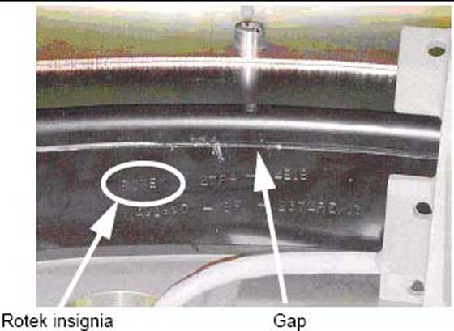
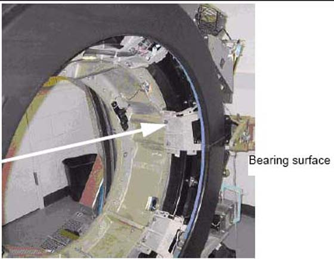

Operating Documentation
Direction 5193574-800, Rev# 22
Module Version 1.0, Version Date 4/22/10
Operating Documentation |
If this is a Rotek bearing, a mark similar to that shown in Illustration 1 is visible on the inside edge of the black-colored bearing assembly.
Illustration 1: Gantry Bearing - Rotek Label

The gap to inspect is shown in Illustration 2 next to the serial number.
Illustration 2: Gantry Bearing

Remove the scan window.
Remove the top and rear gantry covers.
Use a 2.5 mm hex wrench as a tool to measure the gap at the positions shown in Illustration 3. The location of gantry components does not matter. Measure four (4) locations 90 degrees apart from each other.
If the 2.5 mm easily fits without effort in the gap, the gap is out of spec. Illustration 4 shows a gap that is too large in the left picture. The illustration shows a gap that is good in the right picture. Notice that the hex wrench does not fit in the gap in the left picture, but does in the right picture.
Mechanical Installers:
FE Service Action, if Required:
FE Inspection Completion: